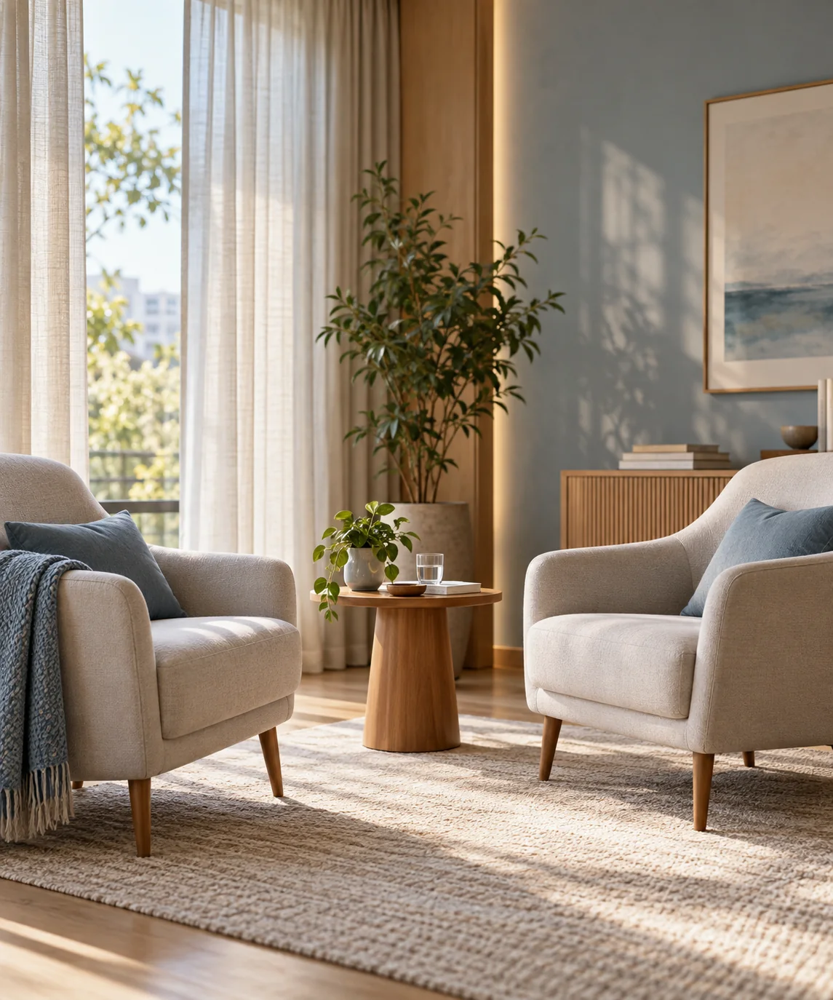
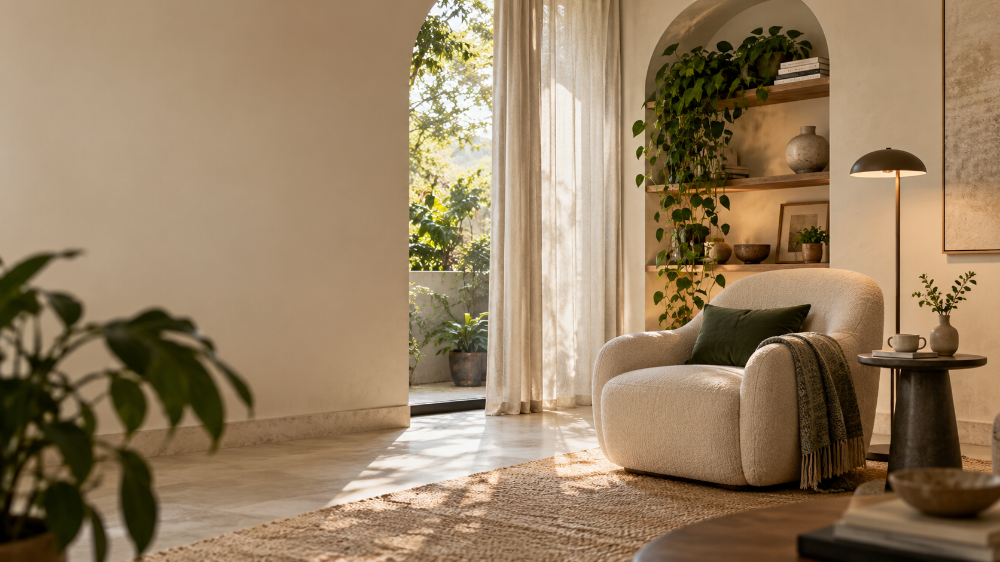

No consultório
Atendimento presencial em Rio Claro, em um ambiente reservado e acolhedor.

Psicoterapia em Rio Claro e região
Você não precisa chegar com tudo organizado. Escolha o tema que mais se aproxima do seu momento e dê o primeiro passo no seu tempo.
Escuta individualUm encontro construído a partir da sua realidade.
Caminhos de cuidado
Não é preciso ter uma definição. Comece pelo assunto que fizer mais sentido agora.
Preocupações, crises, tensão e esgotamento.
TDAH, autismo, identidade, rotina e relações.
Conflitos, limites, separações e padrões.
Lutos, transições e novas possibilidades.
Cuidado em diálogo com os responsáveis.
Escolhas, desejos e caminhos possíveis.
Como funciona
O questionário organiza somente o necessário para compreender sua procura. Depois, cada possibilidade de atendimento é conversada de forma individual.
Presencial e online

Seu primeiro passo
Comece contando apenas o necessário. O restante pode ser construído com calma.
Comece o questionário →